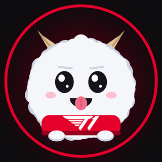
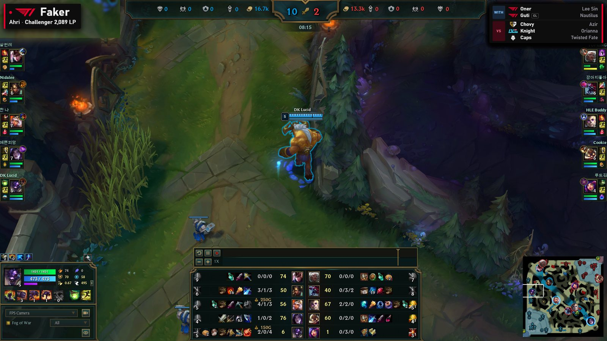
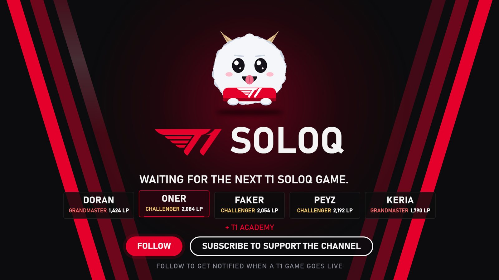

An automated, fan-made Twitch channel that spectates the live ranked solo queue games of T1 players, and of T1 Esports Academy when no T1 player is in game.
Watch on TwitchUnofficial fan project · Not affiliated with T1 or Riot Games
A single script watches a fixed list of pro accounts on the Korean server. As soon as one of them starts a ranked solo queue game, the channel joins that game in spectator mode and streams it, with the camera locked on the player being followed. When the game ends, the channel returns to a waiting screen until the next one starts.


One server-side script, one API key, one operator. Requests are rate limited in the client itself (20 per second, 100 per two minutes).
| Endpoint | Why |
|---|---|
| Account-V1 | Resolves about thirteen fixed Riot IDs to PUUIDs, once, then caches them locally. |
| Spectator-V5 | Every 60 seconds, checks whether those accounts are in a ranked solo game, to pick which game to spectate. |
| League-V4 | Reads Solo/Duo tier and LP, shown on the waiting screen and in the in-game banner. |
| Match-V5 | Lists recent ranked match IDs, only to warn the operator when a tracked account looks inactive or renamed. |
This site collects nothing. It is a set of static pages. There are no accounts, no cookies, no analytics, no advertising scripts and no tracking of any kind. Nothing you do here is stored or shared.
The script that runs the channel stores only a local cache mapping the tracked Riot IDs to their PUUIDs, on the operator's own machine. No personal data about viewers is collected, and no data obtained from the Riot Games API is sold, published as a dataset, or exposed through any API or website.
The stream is hosted by Twitch, which applies its own privacy notice when you watch. This project has no access to viewer data beyond the public statistics Twitch shows every streamer.
Only public professional accounts are followed, and only information the game itself shows to spectators is displayed. If a player wants their account removed from the channel, write to the contact address below and it will be removed.
Questions, takedown requests or anything else: kafaubinchassagne@gmail.com.